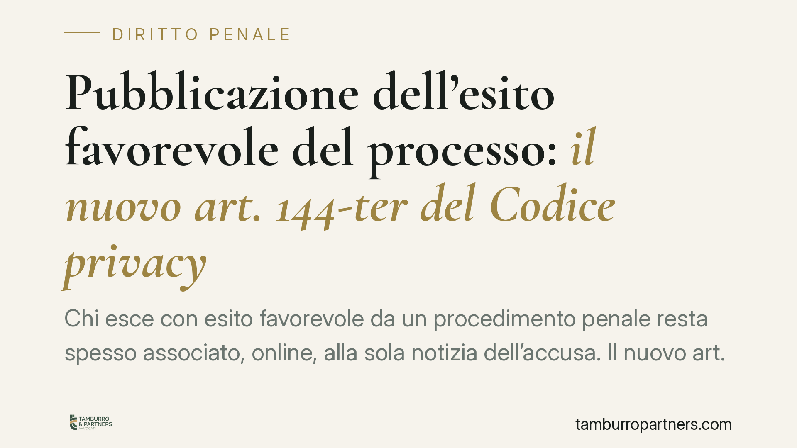

Pubblicazione dell'esito favorevole del processo: il nuovo art. 144-ter del Codice privacy
Chi esce con esito favorevole da un procedimento penale resta spesso associato, online, alla sola notizia dell'accusa. Il nuovo art. 144-ter del Codice privacy interviene su questo squilibrio, riconoscendo il diritto a ottenere dalle testate la pubblicazione gratuita del provvedimento liberatorio. Un meccanismo di integrazione dell'informazione, distinto dal diritto all'oblio. Vediamo cosa cambia, con le cautele del caso.

Il diritto alla pubblicazione dell'esito favorevole del procedimento penale
Una persona viene indagata o imputata. La notizia finisce sui giornali e in rete. Poi il procedimento si chiude in suo favore. Ma quella seconda notizia, quasi mai, raggiunge chi aveva letto la prima.
Il nuovo art. 144-ter del D.Lgs. 196/2003 (Codice in materia di protezione dei dati personali) affronta proprio questo squilibrio informativo. L'intervento riconosce a chi ottiene un provvedimento liberatorio il diritto di chiedere, alle testate che avevano dato conto dell'accusa, la pubblicazione gratuita della notizia favorevole. In caso di inerzia dell'editore è previsto l'intervento del Garante per la protezione dei dati personali.
Una precisazione di metodo. L'iter è giunto all'approvazione definitiva, ma collocazione, numerazione e formulazione del testo vanno verificate sulla Gazzetta Ufficiale alla luce della pubblicazione e dell'entrata in vigore. Ne parliamo quindi in chiave prospettica: è il meccanismo a contare, prima ancora del dato letterale, che potrà conoscere assestamenti.
I quattro provvedimenti liberatori: non sono la stessa cosa
La norma guarda a situazioni diverse, che conviene tenere distinte perché hanno natura e collocazione processuale differenti.
- Archiviazione (artt. 408 ss. c.p.p.): interviene nella fase delle indagini, quando il pubblico ministero non ravvisa elementi per sostenere l'accusa in giudizio. Non c'è imputazione formale.
- Non luogo a procedere (art. 425 c.p.p.): pronunciato dal giudice dell'udienza preliminare quando non si deve procedere o manca la base per il dibattimento.
- Assoluzione (art. 530 c.p.p.): è la sentenza di merito che chiude il dibattimento quando il fatto non sussiste, l'imputato non lo ha commesso, il fatto non costituisce reato o non è previsto come tale.
- Proscioglimento: formula più ampia che comprende le decisioni che definiscono il giudizio senza condanna, incluse le cause di non punibilità o estinzione.
Le implicazioni reputazionali sono simili; la gradazione tecnica resta diversa e va riportata con precisione nella richiesta.
Integrazione dell'informazione, non diritto all'oblio
Qui occorre evitare una confusione frequente.
Il diritto all'oblio tende alla rimozione o deindicizzazione di una notizia che, per il tempo trascorso, non ha più attualità. Il meccanismo dell'art. 144-ter segue una logica opposta: non cancella nulla, aggiunge. L'informazione originaria resta, ma viene completata con l'esito favorevole, così da restituirne la portata reale.
Si tratta, in sostanza, di uno strumento di correttezza informativa: non si pretende l'oblio del passato, ma la rappresentazione completa dei fatti.
La tutela davanti al Garante
Se l'editore non dà seguito alla richiesta, l'interessato può rivolgersi al Garante. La via è quella del reclamo, disciplinato dagli artt. 141 e seguenti del D.Lgs. 196/2003 (come novellato dal D.Lgs. 101/2018) e, sul piano europeo, dagli artt. 77-79 del Regolamento UE 2016/679 (GDPR), che regolano reclamo all'autorità di controllo e ricorso giurisdizionale.
Resta ferma la possibilità del ricorso all'autorità giudiziaria: l'art. 140-bis del Codice disciplina il coordinamento tra tutela davanti al Garante e tutela giurisdizionale, stabilendo i rapporti di alternatività tra i due rimedi. Non regola, invece, il procedimento di reclamo in sé.
Cosa fare in concreto
- Recuperate il provvedimento favorevole in copia conforme (sentenza, decreto di archiviazione, sentenza di non luogo a procedere), con gli estremi e la formula precisa.
- Individuate gli articoli che avevano dato conto dell'accusa: testata, data, URL, titolo.
- Inviate una richiesta scritta all'editore, allegando il provvedimento e indicando con esattezza la natura dell'esito, con conferma di ricezione (PEC o raccomandata).
- Conservate la prova dell'invio e del decorso del termine concesso per la pubblicazione.
- In caso di inerzia, valutate il reclamo al Garante ai sensi degli artt. 141 ss. del Codice e 77 GDPR, o il ricorso giudiziario, coordinando i rimedi secondo l'art. 140-bis.
Consigliamo di curare fin dall'inizio la precisione documentale: la richiesta è tanto più efficace quanto più il provvedimento allegato è chiaro e la formula correttamente riportata.
---
Contributo informativo a cura di Tamburro & Partners - Avv. Giuseppe Tamburro. Non costituisce parere legale.
Ogni condominio ha una storia a sé.
Se gestisci un'amministrazione e vuoi un confronto su una specifica questione condominiale, scrivi allo studio. Ti rispondiamo entro un giorno lavorativo.